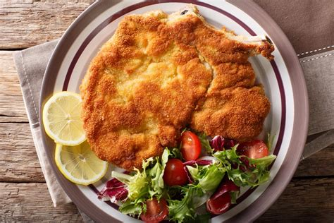

Cotoletta

Descrizione
La cotoletta è un tipico piatto milanese, copiato palesemente dai viennesi perché i milanesi non hanno fantasia.
E' un piatto di carne, ovvero una fetta di bistecca impanata.
Ingredienti
- Uova
- Pan grattato
- Sale
- Farina
- Carne
- Olio di semi
Steps
- Sbatti l'uovo
- Passa la carne nell'uovo e poi nel pan grattato a cui è stato aggiunto un po' di sale
- Fai scaldare l'olio di semi
- Quando l'olio è caldo, friggi la carne
- Tirala fuori dopo 2 minuti e passala con della carta assorbente
- Bravo, hai fritto della carne!